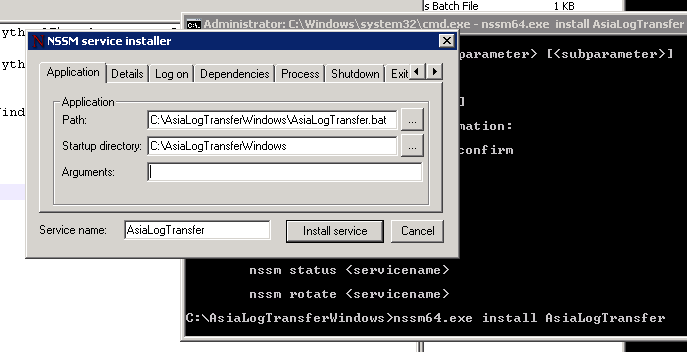

Program As Service at Windows Using NSSM¶
| date: | 2018-04-02 |
|---|---|
| tags: | Windows, NSSM |
| category: | Tools |
| slug: | Program_As_Service_at_Windows |
| author: | Brian Shen |
| summary: | Program As Service at Windows |
Contents
What’s The Problem / 问题是什么¶
Here is the thing, I met a customer, and they can not provide their data using TCP through ssl. Even though they are willing to cooperate and give me the data to generate report for them. they said, the only way that they can provide these data is to use https. Our device doesn’t have the function so I have to write a windows program as an adapter.
情况是这样的，有一个客户，他们需要将数据接入到Saas系统，但是他们不能够使用TCP SSL 加密的方式传输。 虽然他们很愿意合作 并且 提供数据以便获得报告。 而客户的情况是他们只能够将数据通过 https的方式提供出来。 我们的设备不支持 https 传输数据， 因此我需要写一个程序来做转换。
The program is just a simply python scripts. I thought that they will provide a Linux platform to run the program, actually not, is a Windows.
程序很简单，只是python脚本。我以为会是 Linux， 结果是 Windows。
Unlike Linux, start a program as a service in Windows is rather tough.
与 Linux 不同，在 Windows 下 让程序像服务一样运行并不容易。
sc¶
One main solution is to use sc command.
一个主流的解决方式是使用 sc 命令。
There is the sample: / 这是一个例子。
sc create BrianTest binPath= "C:\Python27\python.exe --C:\AsiaLogTransferWindows\AsiaLogTransfer.py"
Without any difficulty. Then go to Control Panel\System and Security\Administrative Tools\services
But when I started the service, an error occurred.
这样作很简单。接着去往 Control Panel\System and Security\Administrative Tools\services 查看服务。
但是当我启动这个服务的时候， 一个错误发生了。
What a pity. Actually, the exe should act like a real service, but it didn’t. So this is the problem.
很遗憾。 一个可执行程序 应该像一个服务一样运行的，但是实际上并没有。
NSSM¶
Then how to solve it? Yes, magic NSSM (https://nssm.cc/)
It is so elegant, simple and easy to use, I would recommend to everyone.
Download from the website then unzip it.
那么如何解决这个问题？ 对的，就是使用 NSSM 。
非常的优雅，简单 并且 容易。
从官网下载 并且 解压。
Using GUI / 使用 GUI¶
Step 1: start a service by giving it a name:
nssm64.exe install AsiaLogTransfer第一步，准备注册一个服务，并且给它一个名字。- Step 2: Using GUI to find the service:
使用 GUI 来找到程序的位置。

Step 3: Start the service:
nssm64.exe start AsiaLogTransfer第三步，启动服务。
Now you can restart the OS without any concern of losing it. And there are many other options, I only use the simplest of it. Wish you can enjoy the amazing tool.
现在我们可以随意的启停系统，而不会有出现丢失服务的风险。
Using command / 使用 命令行¶
You can also use command line so that customer can install with 1 click. 也可以使用命令行，这样用户只需要点击运行 即可。
cd C:\AsiaLogTransferWindows
:: Automatically add the program to service list.
:: So that it can be run in background and restart automatically.
nssm64.exe install AsiaLogTransfer C:\\AsiaLogTransferWindows\\AsiaLogTransfer.bat
nssm64.exe start AsiaLogTransfer
And in AsiaLogTransfer.bat :
cd C:\\AsiaLogTransferWindows
C:\\Python27\\python AsiaLogTransfer.py